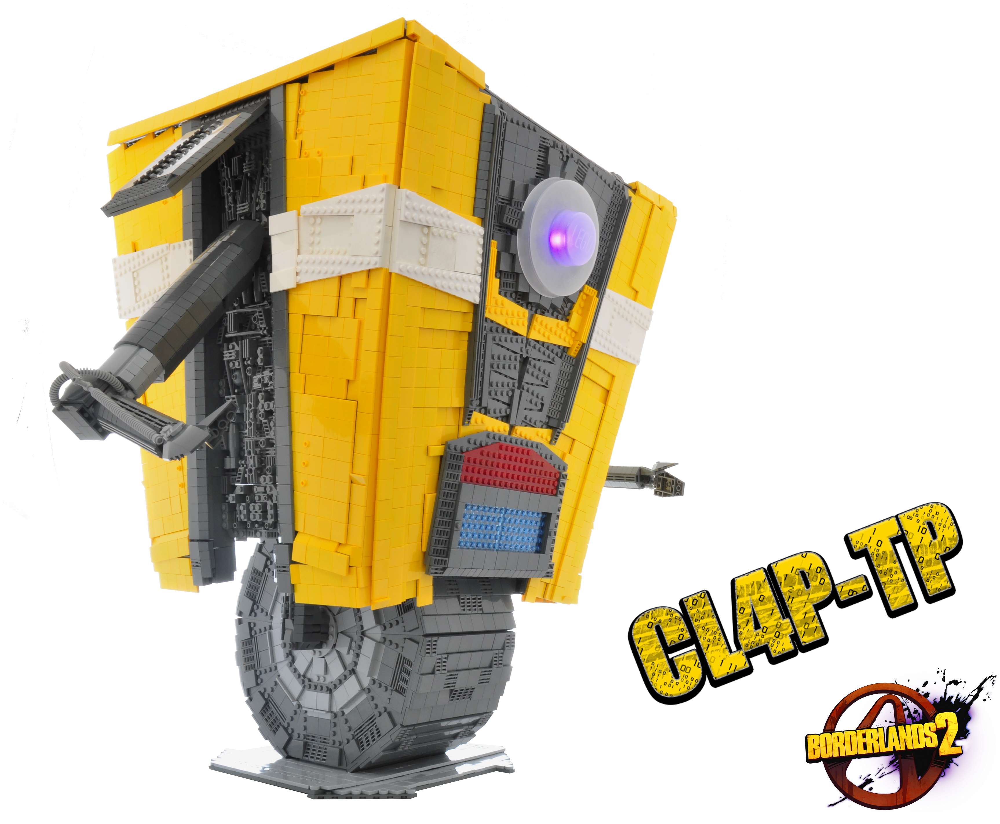
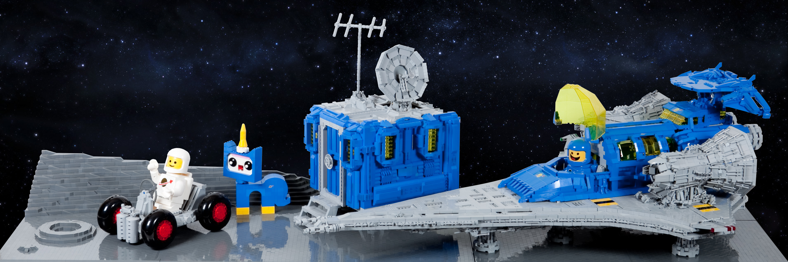

Interview with Si-MOCs
The third episode in the Rebellug Interview series
10/11/18
1. First of all, who are you and what social media platforms are you found on?
Hi I'm Simon Liu, AKA Si-MOCs You can find me at: Flickr: https://www.flickr.com/photos/si-mocs/ Instagram: https://www.instagram.com/si_mocs Youtube: https://www.youtube.com/channel/UCEopqxSPkbqLoAZDvlrcrtg
2. Which social media platform is your favorite, or which one do you prefer to visit, and what content do you like to browse and/or produce on each?
I started, and still use Flickr - There are lots of great mediums to share LEGO these days, but Flickr is still the best in my opinion. For me it's seeing and interacting with the best builders out there - there's just something about Flickr- being a long time Photography site that pushes people to not just build the best, but present the best. also like that there seems to be a more of a two way street in between builders and viewers. on IG or other platforms you definitely get more views/hits/likes etc - but the audience seems to be more average joe. Flickr on the other hand is where a lot of the top builders still lurk and where you honestly get to be with the best of the best builders.
3. How long have you been building with LEGO, and how long have you been involved in the LEGO community? Where and when did you start posting online?
I've been building as a kid, but took a bit of a a dark age till university. I've been in the community now for about 6 years, which feels crazy long - but there are so many that have been doing it for so much longer... I've also been extremely lucky to have been in multiple LUGs, founded my own, created a bunch of fun contests, moderator on EB, and even a blogger on TBB!I attribute a lot of LEGO career to the amazing feedback I got from Flickr community, and the drive to build crazy and have fun from my experience at Brickworld Chicago - which was my first major convention.
4. Where do you draw inspiration? Are there any certain builders or MOCs that inspire you? Or do you get inspired outside of LEGO?
I get a lot of my style from sci-fi movies and books and comics. Aliens in particular was a huge for me and to this day Dropships have a special place in my heart. There are tons of builders I looked up to and still look up too...Pete Reid Nannan Zhang, Tyler Clites, Sean Mayo, and Nick Jensen were all huge when I was just starting. And more recently there have just been so many amazing builders to constantly get inspired from and some day hope to be at that level.
5. What's your favorite theme or subject to build in? Why do you find it so appealing?
Sci-Fi, it's the best. Every piece is a Sci-Fi piece. There's just something fantastic about a world where anything can happen, and ofcourse Greebles. Greebles are the best.
6. What is your favorite hobby or social activity outside of building? How do you spend your time outside of the LEGO realm?
Hockey used to be my go to hobby, but nowadays Escape Rooms are my jam .... Like also LEGO collabs - there's something just awesome when you're part of a team.
7. What are your favorites (music, movies, books, etc.)?
Music: Linkin Park/ Rise Against/ Queen Movies: Aliens, Blade Runners, Dark Knight Trilogy, LOTR Books: Ender's Game (READ IT), Expanse series, 3 Body Problem
8. What's an aspect of the LEGO community that you would want to change?
More Sci Fi ;) Haha no seriously - it'd be less groups, more commonality. The Community is splintered into themes / styles etc, and there just isn't enough cross-pollination. You can definitely see this at conventions where groups tend to stay as just that groups. Builders are builders, we should try to work with other builders and try new things ... I loved how RebelLUG - a traditionally Starwars LUG when ahead and did the Castle Collab - that was awesome.
9. What is your favorite MOC that you’ve built? Or the one you’re most proud of?
I usually say my next moc is my favorite, but there have been a few I've really been proud of:



10. Do all your friends/family know you build with LEGO as a hobby? Or is it something that has never come up in a conversation?
Hah everyone knows - and I get introduced as the LEGO guy everywhere...